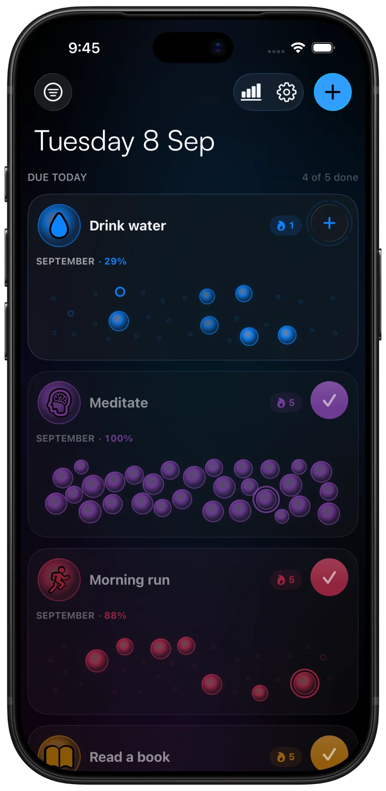
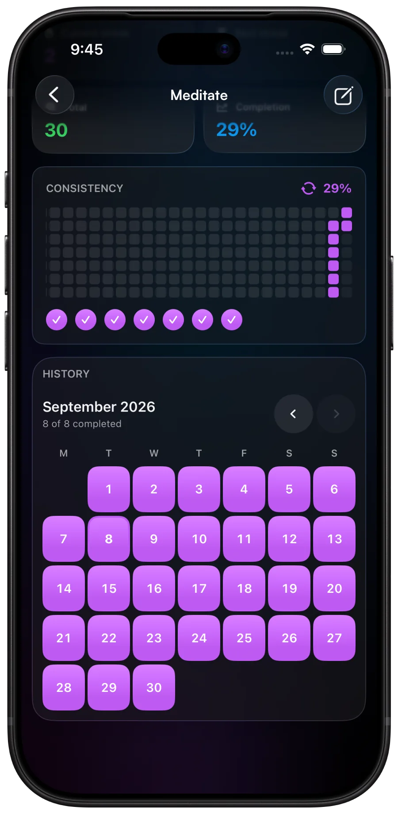
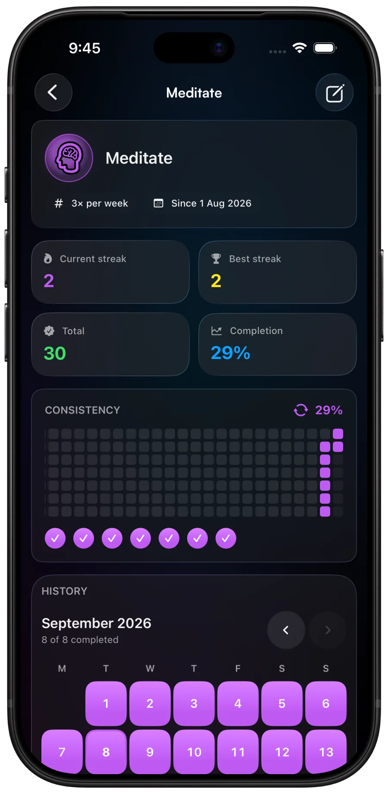
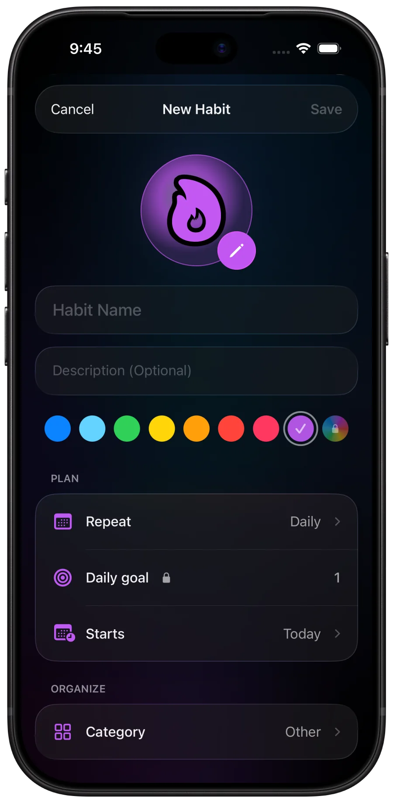
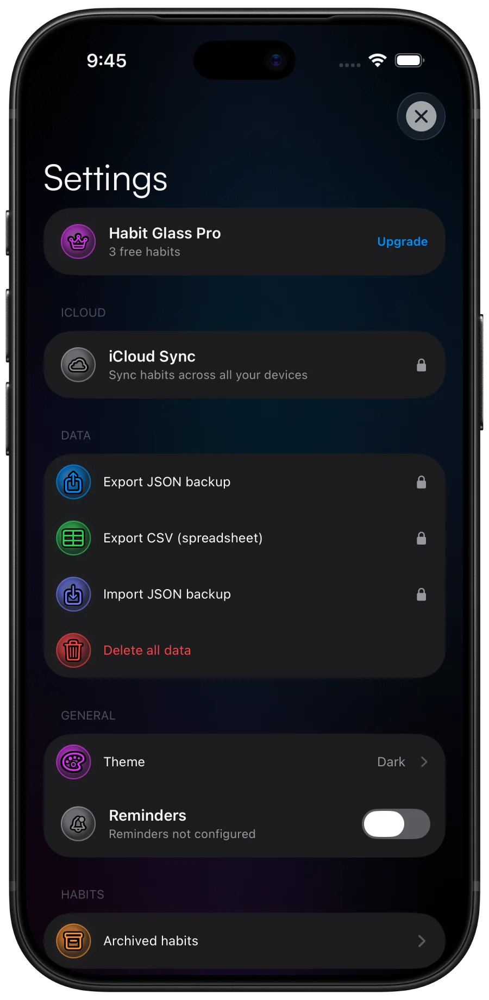

Private by design. Made for iPhone.
Your habits, as a constellation.
One tap at a time, build a routine you can see. HabitGlass turns daily progress into something worth continuing, while your data stays on your device.
Free with three habits. No account needed.

Try it right here
The grid is the whole point.
Every day you show up fills a bubble. Miss one and the gap sits there in plain sight instead of hiding inside a chart. Poke at this and you already know how the app works.
Tap any bubble to fill or clear it. Nothing is saved, nothing is sent.
The HabitGlass experience
Real screens, straight off a real device.
Thoughtful in light and dark, down to the smallest detail. Flip the switch in the header to see both appearances, captured directly from the app.
Home
One tap, then get on with your day.
Today's list shows only what's actually due. Tick it off from the card, or count up if the habit is "three glasses of water" rather than a yes or no.
- A check button sized for a thumb, with haptics behind it
- Counters for habits you do more than once a day
- This month's completion rate on every card
- Sort and filter by category once the list gets long
Detail & history
A month you can read at a glance.
Open a habit and you get the numbers that actually matter, a consistency strip going back months, and a calendar you can tap to fix the day you forgot to log. A complete month looks like an achievement. A patchy one tells you exactly which day of the week keeps getting away from you.
- Current streak, best streak, total check-ins, completion rate
- Streaks understand your schedule, so a planned rest day doesn't break the chain
- Today gets a grace period instead of failing you at midnight
- Tap any day to backfill it or attach a note


Setup
Make it yours in about twenty seconds.
Pick an icon, pick a colour, tell it how often. Habits you want to build and habits you want to quit are the same three taps.
- Hundreds of icons, grouped so you can actually find one
- Thirteen tuned colours, or mix your own
- Every day, set weekdays, X times a week, or every N days
- Start dates, daily goals and categories, all optional

Settings
Light or dark, both done properly.
Follow the system or pin one appearance and forget about it. Both were designed, not generated: the light palette has its own contrast-safe colour set so a yellow habit is still readable on a pale background.
- System, light or dark, applied at the window so every sheet follows
- Per-habit reminders at a time you pick
- JSON export that restores everything, plus CSV for spreadsheets
- Archive a habit to retire it without losing its history

Everything else
The rest of it.
Three habits are free forever, along with every schedule type, the streaks and the month grid. Pro opens the rest.
Home Screen widgets
A bubble field or a streak count on your Home Screen. Check a habit off without opening the app.
ProInsights
A monthly check-in calendar across every habit, overall stats, and a streak leaderboard so you can see which one is slipping.
ProiCloud sync
Off by default. Turn it on and your habits mirror through your own private iCloud database to your other devices. Nowhere else.
ProReminders
One daily nudge per habit, at the time that suits that habit. Local notifications, so nothing leaves the device.
ProDaily goals
Some habits aren't done in one go. Set a target of three, eight, twelve, and the card fills as you tap.
ProExport and import
Full-fidelity JSON out, JSON back in, plus CSV if you want to poke at it in a spreadsheet. Your history is not hostage.
ProPer-day notes
Tap a day in the grid and write down why it went well, or why it didn't.
ProCategories and archive
Group habits your way, and retire the ones you've finished with instead of deleting the history you built.
Schedules that flex
Every day, chosen weekdays, X times a week, or every N days. Free on every habit.
Privacy
There is no server holding your habits.
Not "we take privacy seriously". There is genuinely nowhere for your data to go. No account to make, no profile, no analytics SDK, no ad network.
-
Your habits live in a database on your phone Stored locally so the app works in a tunnel, on a plane, or with the radios off.
-
One network call, and it isn't about you The app talks to RevenueCat to check whether you've paid. That's the entire list.
-
iCloud sync is opt-in and private If you switch it on, data mirrors to your own private iCloud database. I can't read it.
-
Tracking declared as false, because it is The App Store privacy manifest says no tracking, no data collection. Nothing to disclose.
Pricing
Pick what keeps you going.
Start free, subscribe when you need more, or pay once and be done with it. Every option keeps your habits private and ad-free.
Forever
$0
HabitGlass Free
Three habits, for as long as you want them.
- Up to three active habits
- Daily, weekday, X-per-week and every-N-days schedules
- Schedule-aware current and best streaks
- Month grid, consistency strip and stat cards
Monthly or yearly
Price shown in app
HabitGlass Pro
Everything unlocked, with a plan that fits your routine.
- Everything in Free
- Unlimited habits and custom categories
- Home Screen widgets
- Insights, reminders and iCloud sync
One-time
Price shown in app
Pro Lifetime
One purchase. No recurring subscription.
- Everything in HabitGlass Pro
- Unlimited habits and all Pro tools
- Lifetime access on your Apple account
- No monthly or yearly renewal
Final prices use your App Store region and appear before purchase. No account, email or card required here.
Questions
Fair questions.
Do I need an account?
Does it work offline?
Which iOS version do I need?
Is there an Android or web version?
Can I get my data out again?
Do I lose a streak if I take a rest day?
Something's broken. Who do I tell?
Day one is boring
Day thirty is the whole point.
Start with three habits for free. No account, no email, no card. Just open the app and tap.